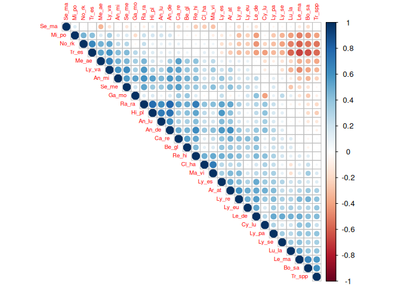
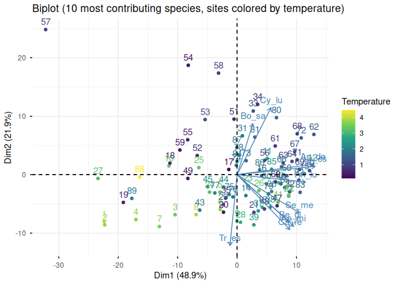
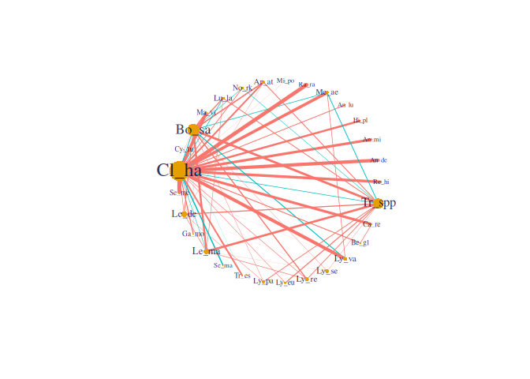
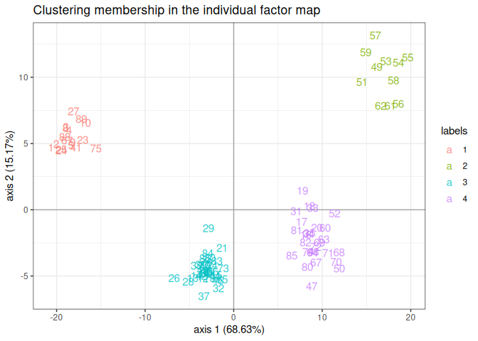

Description
The Poisson lognormal model and variants1 can be used for a variety of multivariate problems when count data are at play. This package implements efficient variational algorithms to fit such models, accompanied with a set of functions for visualization and diagnostic. See this deck of slides for a comprehensive introduction.
PLNmodels covers the following models, all built around the multivariate Poisson-lognormal distribution and sharing a common formula-based interface (covariates, offsets, weights) and a choice of optimization backends (a fast built-in Newton solver, NLOPT, and an experimental torch backend):
- PLN: unpenalized multivariate Poisson regression, with several covariance structures (full, diagonal, spherical, fixed, or a genetic/heritability structure).
- PLNPCA2: probabilistic Poisson PCA — a rank-constrained covariance for dimension reduction and visualization.
- PLNLDA: Poisson lognormal discriminant analysis3 for the supervised classification of count data.
- PLNnetwork4: sparse inverse-covariance (network) inference via a graphical-lasso-like penalty5.
- PLNmixture: model-based clustering6 of count data via a mixture of PLN models.
-
ZIPLN: a zero-inflated extension of PLN for data with excess zeros, with the same family of covariance structures and an optional sparse (
ZIPLNnetwork) variant.
Installation
PLNmodels is available on CRAN. The development version is available on GitHub.
install.packages("PLNmodels") # last stable version, from CRAN
remotes::install_github("pln-team/PLNmodels") # development version, from GitHub
remotes::install_github("pln-team/PLNmodels@tag_number") # a specific tagged releaseIllustration
We illustrate the main models on the barents data set7: the abundance of 30 fish species observed in 89 sites in the Barents sea, along with depth, temperature and geographic coordinates for each site.
data(barents)
## a simple North/South split of the sites, used below to illustrate PLNLDA
barents$zone <- factor(ifelse(barents$Latitude > median(barents$Latitude), "North", "South"))PLN: fit and inspect the covariance structure
Initialization...
Adjusting a full covariance PLN model with nlopt optimizer
Post-treatments...
DONE!
myPLNA multivariate Poisson Lognormal fit with full covariance model.
==================================================================
nb_param loglik BIC AIC ICL
555 -4412.201 -5657.797 -4967.201 -8203.81
==================================================================
* Useful fields
$model_par, $latent, $latent_pos, $var_par, $optim_par
$loglik, $BIC, $ICL, $loglik_vec, $nb_param, $criteria
* Useful S3 methods
print(), coef(), sigma(), vcov(), fitted()
predict(), predict_cond(), standard_error()
PLNPCA: dimension reduction
myPCAs <- PLNPCA(Abundance ~ Depth + Temperature + offset(log(Offset)), data = barents, ranks = 1:5) Initialization...
Adjusting 5 PLN models for PCA analysis.
Rank approximation = 1
Rank approximation = 2
Rank approximation = 3
Rank approximation = 4
Rank approximation = 5
Post-treatments
DONE!
myPCA <- getBestModel(myPCAs)
factoextra::fviz_pca_biplot(
myPCA, select.var = list(contrib = 10), col.ind = barents$Temperature,
title = "Biplot (10 most contributing species, sites colored by temperature)"
) + ggplot2::labs(col = "Temperature") + ggplot2::scale_color_viridis_c()
PLNnetwork: sparse network inference
myNets <- PLNnetwork(Abundance ~ Depth + Temperature + offset(log(Offset)), data = barents) Initialization...
Adjusting 30 PLN with sparse inverse covariance estimation
Joint optimization alternating gradient descent and graphical-lasso
sparsifying penalty = 3.77829
sparsifying penalty = 3.489896
sparsifying penalty = 3.223515
sparsifying penalty = 2.977467
sparsifying penalty = 2.7502
sparsifying penalty = 2.540279
sparsifying penalty = 2.346382
sparsifying penalty = 2.167285
sparsifying penalty = 2.001858
sparsifying penalty = 1.849058
sparsifying penalty = 1.707921
sparsifying penalty = 1.577557
sparsifying penalty = 1.457143
sparsifying penalty = 1.345921
sparsifying penalty = 1.243188
sparsifying penalty = 1.148296
sparsifying penalty = 1.060648
sparsifying penalty = 0.9796893
sparsifying penalty = 0.9049105
sparsifying penalty = 0.8358394
sparsifying penalty = 0.7720405
sparsifying penalty = 0.7131113
sparsifying penalty = 0.6586802
sparsifying penalty = 0.6084037
sparsifying penalty = 0.5619647
sparsifying penalty = 0.5190704
sparsifying penalty = 0.4794502
sparsifying penalty = 0.4428542
sparsifying penalty = 0.4090515
sparsifying penalty = 0.377829
Post-treatments
DONE!
plot(getBestModel(myNets), remove.isolated = TRUE)
PLNmixture: model-based clustering
my_mixtures <- PLNmixture(Abundance ~ offset(log(Offset)), data = barents, clusters = 1:4,
control = PLNmixture_param(smoothing = "none")) Initialization...
Adjusting 4 PLN mixture models.
number of cluster = 1
number of cluster = 2
number of cluster = 3
number of cluster = 4
Post-treatments
DONE!
myMixture <- getBestModel(my_mixtures)
plot(myMixture, "pca", main = "Clustering membership in the individual factor map")
table(cluster = myMixture$memberships, zone = barents$zone)J. Chiquet, M. Mariadassou and S. Robin: The Poisson-lognormal model as a versatile framework for the joint analysis of species abundances, Frontiers in Ecology and Evolution, 2021. doi:10.3389/fevo.2021.588292↩︎
J. Chiquet, M. Mariadassou and S. Robin: Variational inference for probabilistic Poisson PCA, the Annals of Applied Statistics, 12: 2674–2698, 2018. doi:10.1214/18-AOAS1177↩︎
Fisher, R. A. The use of multiple measurements in taxonomic problems. Annals of Eugenics, 7(2), 1936; Rao, C. R. The utilization of multiple measurements in problems of biological classification. JRSS B, 10(2), 1948.↩︎
J. Chiquet, M. Mariadassou and S. Robin: Variational inference for sparse network reconstruction from count data, Proceedings of the 36th International Conference on Machine Learning (ICML), 2019. link↩︎
Friedman, J., Hastie, T. and Tibshirani, R. Sparse inverse covariance estimation with the graphical lasso. Biostatistics, 9(3), 2008.↩︎
Fraley, C. and Raftery, A. E. MCLUST: Software for model-based cluster analysis. Journal of Classification, 16(2), 1999.↩︎
Fossheim, M., Nilssen, E. M. and Aschan, M. Fish assemblages in the Barents Sea. Marine Biology Research, 2(4), 2006. doi:10.1080/17451000600815698↩︎